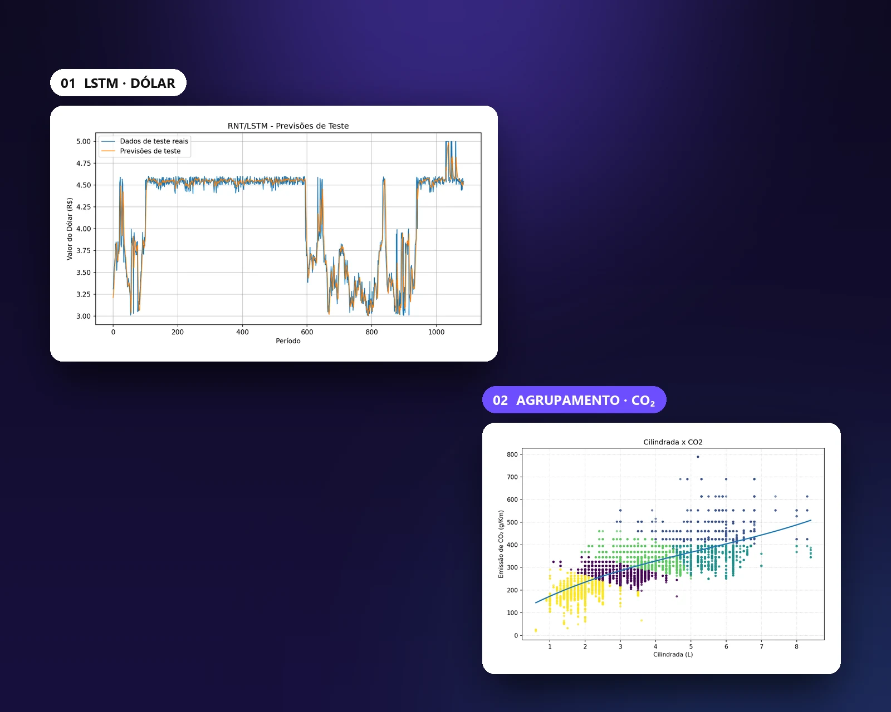
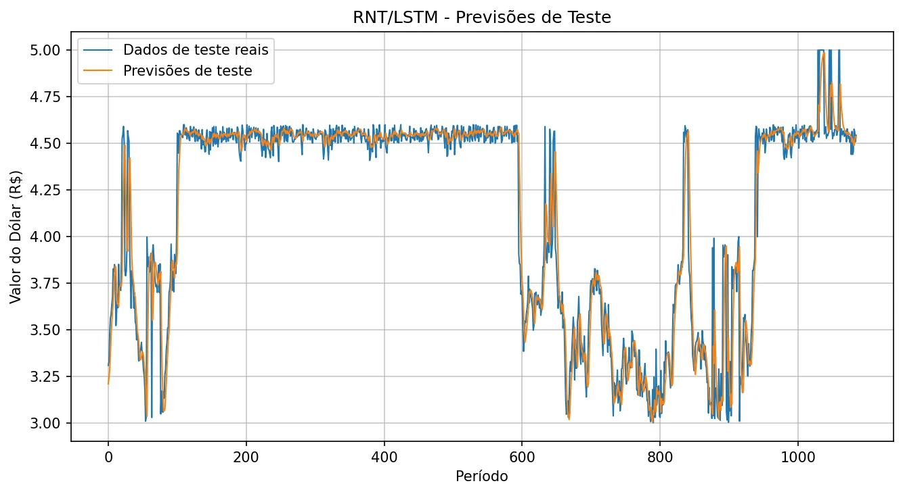
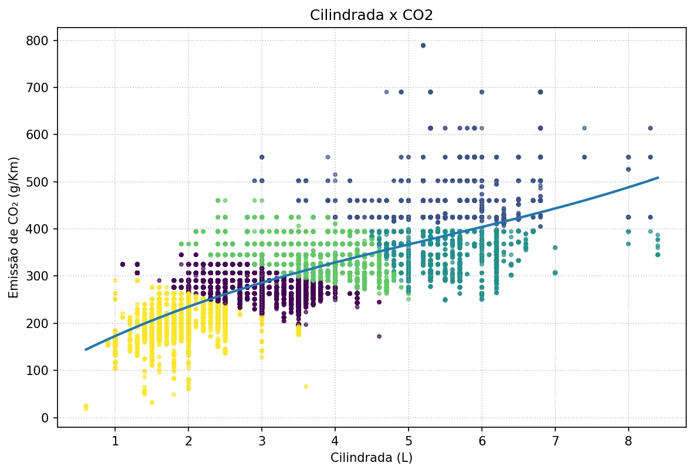

Data Science · Redes Neurais · PUCPR · 2026
Redes neurais para prever o dólar e agrupar carros
Duas redes em PyTorch numa atividade de Redes Neurais da PUCPR: uma LSTM que prevê a cotação do dólar e uma rede competitiva que agrupa veículos pela relação entre cilindrada, eficiência e emissão de CO₂.

Prevendo o dólar
A LSTM acompanhou bem as subidas e descidas do dólar no teste.
Ela olha os 10 últimos valores da série para prever o próximo. Usei uma camada LSTM com 64 neurônios, uma camada densa de 16 e treinei por 150 épocas com Adam. A normalização (MinMaxScaler) foi ajustada só com os dados de treino, para não vazar informação do teste.
R² da LSTM, de 0 a 1

Agrupando carros
A rede competitiva separou os carros em grupos parecidos, sem ninguém dizer quais eram os grupos.
Cada um dos 5 neurônios vira o representante de um grupo de veículos. Depois ajustei uma curva polinomial em cada relação para ver a tendência e fazer previsões, como a emissão estimada de um carro com motor de 8,2 litros (cerca de 498 g/km).
R² da curva de tendência, de 0 a 1

O que os números mostram
A cilindrada sozinha explica só parte da variação (R² perto de 0,64), enquanto eficiência e emissão andam quase juntas (R² de 0,98). Para melhorar, eu usaria mais variáveis, como tipo de combustível e peso do carro. Na LSTM, o R² caiu de 0,98 no treino para 0,92 no teste: ela generaliza bem, mas ainda erra nos picos mais bruscos.